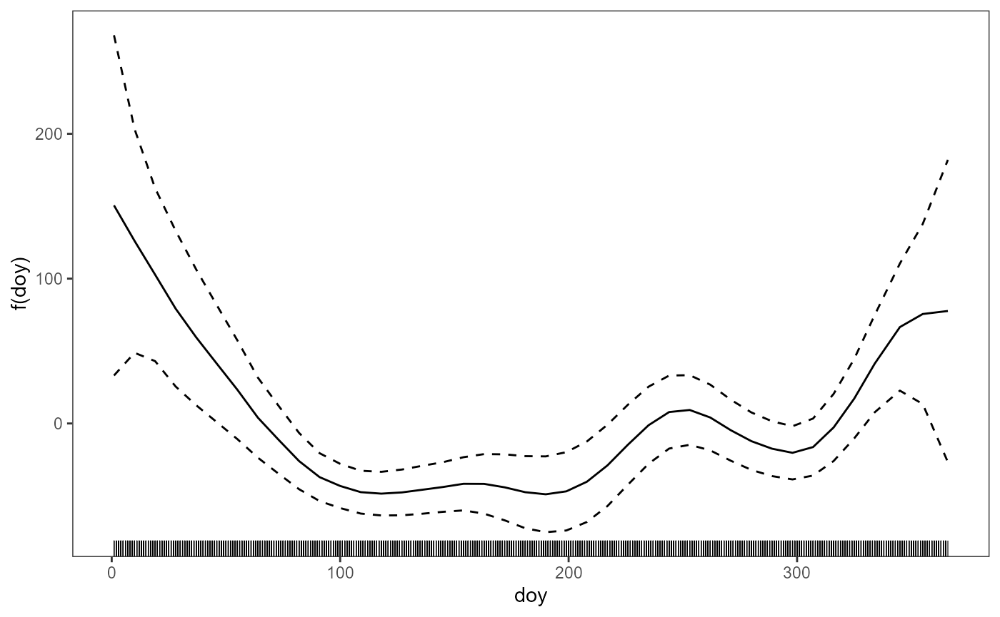

An introduction to SCM: Fit an additive covariance matrix model for multivariate normal data
Vincenzo Gioia and Matteo Fasiolo
2023-02-27
SCM.RmdMultivariate Gaussian additive models
Let \(\boldsymbol y_i\sim \mathcal{N}(\boldsymbol \mu_i, \boldsymbol \Sigma_i)\), \(i=1, \ldots, n\), be independent response vectors.
The covariates enter the model through the linear predictor vector \(\boldsymbol \eta_i=(\eta_{i1}, \ldots, \eta_{iq})\), with \(q= d+d(d+1)/2\), whose components allow specifying linear and smooth effects.
The mean model is specified by \(\mu_{ij} = \eta_{ij}\), \(j=1, \ldots,d\), while the remaining \(\eta_{ij}\), \(j=d+1, \ldots,q\), specify the nonredundant, unconstrained elements of a covariance matrix parametrisation. The latter can be stated via the modified Cholesky decomposition (MCD) by Pourahmadi (1999) or the matrix logarithmic tranformation by Chiu et al. (1996)
The multivariate Gaussian additive models are fitted via the gam_scm() wrapper
gam_scm(formula, family = mvn_scm(d = 2, param = NULL, nb = 1), optimizer = NULL, data = list(), aGam = list())The inputs of the gam_scm() function are:
-
formula: list of model formulas; -
mvn_scm: model family:-
d: dimension of the outcome vector; -
param: by default the MCD parametrisation ("mcd"), otherwise set ("logm") for the logM one; -
nb: number of of blocks for chunking the evaluation of some quantities (default no chunks, while consider to increase such value if memory problem appears);
-
-
data: a data frame or a list containing the outcomes and the covariates; -
optimizer: optional argument specifying the approach to smoothing parameter optimisation; by default the generalised Fellner-Schall method ("efs") by Wood and Fasiolo (2017), otherwise only for the MCD parametrisation the quasi Newton’s optimisation of the Laplace approximate marginal likelihood criterion ("bfgs") according to Wood et al. (2016); -
aGam: a list of auxiliary arguments that could be passed to thegam()function of the mgcv package (Wood, 2017).
Illustration
We introduce the most important functions of the package by means of the GefCom2014 dataset (Hong et al., 2016). For illustrative purposes, the hourly loads (in MW) from 5 p.m. (load_h17) to 8 p.m (load_h20) on a daily basis are considered as the outcome variables. The dataset, spanning the period from 2005/01/02 to 2011/11/30, includes the day of the year (doy), the day of the week (dow), the exponentially smoothed temperature (temp95_h<k>) and the loads of the previous day (load24_h<k>) at the \(k\)-th hour, \(k=17,\ldots, 20\).
We start specifying the model formula for the mean vector:
my_k = 15
my_bs = "cr"
mformula <- list(load_h17 | load_h18 | load_h19 | load_h20 ~ dow + s(doy, k = my_k, bs = my_bs),
load_h17 ~ load24_h17 + s(temp95_h17),
load_h18 ~ load24_h18 + s(temp95_h18),
load_h19 ~ load24_h19 + s(temp95_h19),
load_h20 ~ load24_h20 + s(temp95_h20))The model formula is composed by two parts:
- “Common” specification: by using the
|operator, all the outcomes of the l.h.s. ofy ~ xinvolve the same covariates (first row); - “Single-element” specification: the (rest of the) formula involving element-specific covariates can be stated separately (last 4 rows);
For simplicity, we consider the MCD-based additive covariance matrix model, which means modelling the elements of \(\log \boldsymbol D^2_i\) and \(\boldsymbol T_i\) resulting from \(\boldsymbol \Sigma^{-1}_i={\boldsymbol T^\top_i}{ \boldsymbol D^{-2}_i} {\boldsymbol T_i}\). For this application, it means to specify a model formula for the non-trivial elements of
\[ \log \boldsymbol D^2_i = \begin{pmatrix}\eta_{i5} & 0 & 0 & 0 \\ 0& \eta_{i6} & 0 & 0 \\0 & 0 & \eta_{i7} & 0 \\0 & 0 & 0 & \eta_{i8}\end{pmatrix} \hspace{2cm} \boldsymbol T_i= \begin{pmatrix} 1 & 0 & 0 & 0 \\ \eta_{i9}& 1 & 0 & 0 \\ \eta_{i10} & \eta_{i11} & 1 & 0 \\\eta_{i12} & \eta_{i13} & \eta_{i14} & 1\end{pmatrix}\]
We facilitate the model formula specification (implicitly allowing a connection with the logM parametrisation) by introducing a matrix \(\boldsymbol \Theta_i\) as in the form
\[\boldsymbol \Theta_i= \begin{pmatrix} \eta_{i4} & \eta_{i9} & \eta_{i10} & \eta_{i12} \\ \eta_{i9}& \eta_{i5} & \eta_{i11} & \eta_{i13} \\ \eta_{i10} & \eta_{i11} & \eta_{i7} & \eta_{i14} \\\eta_{i12} & \eta_{i13} & \eta_{i14} & \eta_{i8} \end{pmatrix}\]
whose relation with the matrices \(\log \boldsymbol D^2_i\) and \(\boldsymbol T_i\) is simply \([\boldsymbol \Theta_i]_{jj}=[\log \boldsymbol D^2_i]_{jj}\), \(j=1, \ldots, 4\), and \([\boldsymbol \Theta_i]_{jk}= [\boldsymbol \Theta_i]_{kj}= [\boldsymbol T_i]_{jk}\), \(1 \leq k < j \leq 4\).
For instance, consider the following model formula for the covariance matrix model:
my_k2 = 10
my_bs = "tp"
mformula <- c(mformula, list(
Th_11 | Th_22 | Th_33 | Th_44 | Th_12 | Th_23 | Th_34 ~ dow + s(doy, k = my_k, bs = my_bs),
Th_11 ~ s(temp95_h17),
Th_22 ~ s(temp95_h18),
Th_33 ~ s(temp95_h19),
Th_44 ~ s(temp95_h20)))As in the mean model, the covariance matrix model can be stated using a “Common” and a “Single-element” specification. However, the l.h.s. of the model formula statement y ~ x targets the element of \(\boldsymbol \Theta\) to be modelled via the sintax Th_st ~ x, where \(s\) and \(t\) are the indices targeting the elements of \(\boldsymbol \Theta_i\).
Note that not specifying a model formula for a component of \(\Theta\) that implies such element is automatically modelled via intercept. In contrast, the model formula for the mean vector components requires to be specified in any case.
The model is then fitted via
The resulting object fit1 is of class "scm" and can be explored via
-
plot(): to obtain the plot of the smooth effects on the linear predictor scale
plot(fit1, scale = FALSE, pages = 1) -
summary(): summary of linear and smooth effects (intercept = FALSEavoids printing the intercepts)
summary(fit1, intercept = FALSE) -
residuals(): raw residuals (type = "response"), uncorrelated standard normal residuals (default,"deviance") and Pearson’s residuals ("pearson")
The predict() function allows to obtain:
- fitted values in terms of \(\boldsymbol \eta\)
- fitted values in terms of mean vector, variances and correlations (Note that the first four columns corresponds to the mean vector, the columns 5-8 the variances and the last six columns correspon to the correlations following the row-wise ordering, that is (2,1), (3,1), (3,2), (4,1), (4,2) and (4,3))
- fitted values in terms of (mean vector, variances, covariances)
## [,1] [,2] [,3] [,4] [,5] [,6] [,7]
## 1 115.57999 109.29417 107.12426 107.55051 345.00041 380.41531 404.21131
## 2 103.62242 95.79812 92.15967 90.95859 194.88233 211.45315 218.47222
## 3 90.72186 82.53147 78.76657 77.47152 75.38906 82.02693 87.68686
## 4 91.27840 82.81718 78.84653 77.25713 82.63282 88.90992 93.91295
## 5 90.34403 81.23424 76.69174 74.78123 74.13510 80.50152 87.18804
## 6 101.00277 93.29391 88.97594 87.38839 146.50549 154.48771 162.74744
## [,8] [,9] [,10] [,11] [,12] [,13] [,14]
## 1 430.83223 361.22653 370.78073 391.54811 380.85143 402.90381 416.52786
## 2 224.53788 202.14192 204.03489 214.30886 205.08170 216.00432 220.79684
## 3 93.52467 78.10238 79.82161 84.38060 81.34185 86.35829 90.14268
## 4 98.78637 85.00924 86.13507 90.80895 86.98921 92.20045 95.88335
## 5 94.53048 76.63749 78.63748 83.23227 80.58371 85.71751 90.29103
## 6 172.51746 149.85170 152.78919 158.12093 155.89525 161.74611 166.90203The function Sigma_mat() allows to organise the covariance matrices in a list, for instance
## [,1] [,2] [,3] [,4]
## [1,] 345.0004 361.2265 370.7807 380.8514
## [2,] 361.2265 380.4153 391.5481 402.9038
## [3,] 370.7807 391.5481 404.2113 416.5279
## [4,] 380.8514 402.9038 416.5279 430.8322The mgcViz package by Fasiolo et al. (2020) allows to obtain the residual diagnostics and the accumulated local effects (ALEs) by Apley and Zhu (2020). For instance, the centered ALE of the variable `doy’ on the variance of the net-demand at 5 p.m. is obtained via
## Warning: package 'nlme' was built under R version 4.1.3## Warning: package 'ggplot2' was built under R version 4.1.3
Sigma_el <- SCM:::sel_elem(d)
var_y1 <- ALE(fit1, x = "doy", type = "response",
oind = Sigma_el(1, 1), center = 1)
plot(var_y1)
References
Apley, D. W. and Zhu, J. (2020) Visualizing the effects of predictor variables in black box supervised learning models. Journal of the Royal Statistical Society: Series B (Statistical Methodology), 82 (4), 1059 – 1086.
Chiu, T. Y. M., Leonard, T. and Tsui, K.-W. (1996) The matrix-logarithmic covariance model. Journal of the American Statistical Association, 91 (433), 198 – 210.
Fasiolo, M., Nedellec, R., Goude, Y. and Wood, S.N., 2020. Scalable visualization methods for modern generalized additive models. Journal of computational and Graphical Statistics, 29 (1), 78–86.
Hong, T., Pinson, P., Fan, S., Zareipour, H., Troccoli, A., and Hyndman, R.J. (2016). Probabilistic energy forecasting: global energy forecasting competition 2014 and beyond. International Journal of Forecasting, 32, 896 – 913.
Pourahmadi, M. (1999) Joint mean-covariance models with applications to longitudinal data: unconstrained parameterisation. Biometrika, 86 (3), 677 – 690.
Wood, S. N., Pya, N. and S"{a}fken, B. (2016) Smoothing parameter and model selection for general smooth models (with discussion). Journal of the American Statistical Association, 111 (516), 1548 – 1575.
Wood, S. N. (2017) Generalized Additive Models: An Introduction with R, 2nd ed. Boca Raton, FL, USA: Chapman and Hall/CRC.
Wood, S. N. and Fasiolo, M. (2017). A generalized Fellner-Schall method for smoothing parameter optimization with application to Tweedie location, scale and shape models. Biometrics, 73 (4), 1071 – 1081.